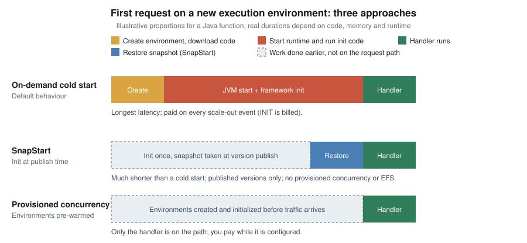

AWS Lambda
|
This content was generated with the assistance of AI and should be verified against the official documentation before being relied on in production. |
Commands and limits below are current for AWS CLI v2 (2.37 line), AWS SDK for Java 2.x, Java 25 (java25) on Amazon
Linux 2023, SAM CLI 1.16x and the Lambda quotas and runtime tables published on 2026-10-01; re-verify them with
aws --version and the linked pages before relying on them in a pipeline.
AWS Lambda runs a function in a managed execution environment in response to an event, scales the number of
environments with the traffic and bills for requests and execution time rather than for idle servers. It is the
simplest AWS way to deploy small units of code: there is no cluster, no instance and no load balancer to operate.
In the Bookshelf scenario (see AWS (Amazon Web Services)) Lambda hosts the notifier function that sends
order-confirmation email when a message arrives in a queue and the thumbnailer function that reacts to an upload in
bookshelf-uploads-<account-id>. This page is the "simple deployment" guide: how a function is built, packaged,
secured, configured, versioned and scaled. Event sources, SAM applications, orchestration and the full notifier
pipeline are in Lambda: Event-Driven and Serverless Apps; how Quarkus targets Lambda is in
Serverless and Cloud Functions; the choice between Lambda, containers and virtual machines
is in Choosing a Compute Service.
Concepts
- Function
-
The unit of deployment: your code plus its configuration (runtime, memory, timeout, execution role, environment variables). A function has an ARN such as
arn:aws:lambda:us-east-1:111122223333:function:notifier. - Handler
-
The entry point Lambda calls for each event. For Java it is
package.Class::method, for examplecom.example.bookshelf.notifier.NotifierHandler::handleRequest. - Runtime
-
The language environment that relays events between Lambda and your handler, identified by an identifier such as
java25,python3.14ornodejs24.x. An OS-only runtime (provided.al2023) lets you bring any language, for example a Quarkus or GraalVM native executable. - Execution environment
-
A secure, isolated sandbox (a Firecracker microVM) with the memory, CPU,
/tmpspace and runtime your function is configured for. One environment handles one invocation at a time and is reused for later invocations while it stays warm. - Execution role
-
The IAM role Lambda assumes to run your function; it is the identity the code uses when it calls other AWS services. It is distinct from the resource-based policy, which says who may invoke the function.
- Version and alias
-
A version is an immutable snapshot of code and configuration; an alias is a named pointer to a version (and optionally a second one for weighted traffic shifting).
- Concurrency
-
The number of execution environments serving requests at the same moment.
The execution environment lifecycle
Every environment moves through three phases. Understanding which code runs in which phase explains cold starts, SnapStart, the billing of initialization and why connections and clients are created outside the handler.
- INIT
-
Lambda creates the environment, downloads the code, starts the runtime and any extensions, and runs code outside the handler (static initializers, framework start-up, SDK client construction). Since August 2025 INIT is billed like handler execution for every cold start, including for the managed runtimes where it used to be free; see Pricing model.
- INVOKE
-
Lambda calls the handler with the event. Memory and globals set earlier are still there on a warm start.
- SHUTDOWN
-
When an environment is retired, the runtime and extensions get a short window to flush buffers. There is no guarantee how long an idle environment survives, so code must not rely on it.
A cold start is an invocation that has to run INIT first. Java functions are the usual victims because of JVM and framework start-up, which is why SnapStart and Java on Lambda matters.

Supported runtimes
Lambda provides managed runtimes for the long-term-support releases of each language and keeps them patched. Each major language version has its own identifier, and you move a function to a newer one by changing that identifier. The table lists the identifiers used for new work and the dates to plan around, taken from the Lambda runtimes page on 2026-10-01.
| Language | Identifier | Operating system | Deprecation date |
|---|---|---|---|
Java 25 |
|
Amazon Linux 2023 |
2029-06-30 |
Java 21 |
|
Amazon Linux 2023 |
2029-06-30 |
Java 17 / 11 / 8 on AL2023 |
|
Amazon Linux 2023 |
2029-06-30 |
Java 17 / 11 / 8 on Amazon Linux 2 |
|
Amazon Linux 2 |
2027-06-30 |
Node.js 24 |
|
Amazon Linux 2023 |
2028-04-30 |
Node.js 22 |
|
Amazon Linux 2023 |
2027-04-30 |
Python 3.14 / 3.13 |
|
Amazon Linux 2023 |
2029-06-30 |
Python 3.12 |
|
Amazon Linux 2023 |
2028-10-31 |
Python 3.11 |
|
Amazon Linux 2 |
2027-06-30 |
Python 3.10 |
|
Amazon Linux 2 |
2026-10-31 |
.NET 10 |
|
Amazon Linux 2023 |
2028-11-14 |
.NET 9 (container images only) and .NET 8 |
|
Amazon Linux 2023 |
2026-11-10 |
Ruby 4.0 / 3.4 / 3.3 (see the Ruby Reference) |
|
Amazon Linux 2023 |
2029-03-31 / 2028-03-31 / 2027-03-31 |
OS-only runtime |
|
Amazon Linux 2023 |
2029-06-30 |
Points that matter in practice:
-
Deprecation is staged. After the deprecation date AWS no longer patches the runtime and the console stops allowing new functions on it; creating new functions and updating existing ones through the CLI, SAM or CloudFormation is blocked on later dates published in the same table. Lambda emails the account contact, posts to the Health Dashboard and flags functions in Trusted Advisor at least 180 days ahead. Use versions and aliases so a runtime upgrade can be rolled back.
-
Already gone:
python3.8andpython3.9,nodejs18.x,nodejs20.x,provided.al2and the Java 8 Amazon Linux runtime are deprecated. Older guides and tutorials still showpython3.8orpython3.9; use a current identifier. -
Amazon Linux 2 reached end of life on 2026-06-30. The remaining AL2-based runtimes only receive patches until the dates above. Prefer the AL2023-based identifiers (
java17.al2023,java25,provided.al2023). -
Previews. Node.js 26 and Python 3.15 are in public preview, not covered by the SLA, with general availability targeted for November 2026; they are not for production.
-
Both architectures. Every supported runtime runs on
x86_64andarm64. -
Runtime-included SDKs. The Node.js, Python and Ruby runtimes bundle an AWS SDK, but AWS recommends packaging the exact SDK modules you use. Java does not bundle an SDK; include AWS SDK for Java 2.x (the 1.x line reached end of support on 2025-12-31).
Packaging: zip or container image
| Aspect | Zip archive | Container image |
|---|---|---|
Contents |
Code and dependencies, up to 50 MB zipped through the API (larger via S3) and 250 MB unzipped including layers |
An OCI image up to 10 GB uncompressed, stored in Amazon ECR |
Runtime |
A managed runtime chosen on the function |
The runtime is in the image: an AWS base image, an OS-only base image or your own image with the runtime interface client |
Layers |
Up to 5 |
Not supported; add the content to the image |
Patching |
Lambda patches the managed runtime |
You rebuild from the latest base image and redeploy |
Typical use |
Small functions, quick iteration |
Large dependencies, existing container pipelines, native executables |
For a Java zip, package a "fat" or "shaded" JAR (or a zip with lib/), and set the handler to
package.Class::method. For an image, start FROM public.ecr.aws/lambda/java:25 and copy the classes and
dependencies into the task root.
Creating a function
The running example is the notifier function: it receives an SQS event and prints one line per message. The handler
is deliberately small; the SES call that makes it useful is added in
Lambda: Event-Driven and Serverless Apps.
Java handler
package com.example.bookshelf.notifier;
import com.amazonaws.services.lambda.runtime.Context;
import com.amazonaws.services.lambda.runtime.RequestHandler;
import com.amazonaws.services.lambda.runtime.events.SQSEvent;
import software.amazon.awssdk.http.urlconnection.UrlConnectionHttpClient;
import software.amazon.awssdk.regions.Region;
import software.amazon.awssdk.services.sesv2.SesV2Client;
public class NotifierHandler implements RequestHandler<SQSEvent, String> {
// Created once per execution environment (INIT phase), reused by every invocation.
// The default credential chain picks up the execution role automatically.
private static final SesV2Client SES = SesV2Client.builder()
.region(Region.of(System.getenv("AWS_REGION")))
.httpClient(UrlConnectionHttpClient.create())
.build();
@Override
public String handleRequest(SQSEvent event, Context context) {
for (SQSEvent.SQSMessage message : event.getRecords()) {
context.getLogger().log("order message " + message.getMessageId());
}
return "processed " + event.getRecords().size();
}
}Dependencies (Maven): com.amazonaws:aws-lambda-java-core, com.amazonaws:aws-lambda-java-events and the
software.amazon.awssdk:sesv2 and url-connection-client artifacts, with the AWS SDK for Java 2.x BOM managing the
versions. The URL-connection HTTP client starts faster than the default Apache client, which suits a short-lived
function. The code uses no keys: the SDK default credential chain reads the temporary credentials Lambda injects from
the execution role. See the
Building Lambda functions with Java documentation.
In the AWS Management Console
-
Open the Lambda console and choose the Region in the selector (top right); examples use
us-east-1, a placeholder. -
Choose Create function, keep Author from scratch, and enter the name
notifier. -
Choose the runtime Java 25 and the architecture arm64 (Graviton), which is cheaper per GB-second for most workloads and supported by every managed runtime.
-
Under Permissions, keep Create a new role with basic Lambda permissions, or expand Change default execution role and select the role described in Execution role. Choose Create function.
-
On the Code tab choose Upload from, then .zip or .jar file, and select the built JAR. For packages above 50 MB upload to S3 first and choose Amazon S3 location.
-
In Runtime settings choose Edit and set the handler to
com.example.bookshelf.notifier.NotifierHandler::handleRequest. -
On the Configuration tab choose General configuration, Edit, and set memory (for example 1024 MB) and timeout (for example 30 seconds); the sections below cover the rest of the tabs.
-
On the Test tab create a test event from the sqs template and choose Test; the Execution results panel shows the return value, duration and billed duration, and Log output links to CloudWatch Logs.
With the AWS CLI
AWS_REGION=us-east-1
ACCOUNT_ID=$(aws sts get-caller-identity --query Account --output text)
FUNCTION=notifier
ROLE_ARN="arn:aws:iam::${ACCOUNT_ID}:role/bookshelf-notifier-role" # see "Execution role"
aws lambda create-function \
--function-name "$FUNCTION" \
--runtime java25 \
--architectures arm64 \
--handler com.example.bookshelf.notifier.NotifierHandler::handleRequest \
--role "$ROLE_ARN" \
--zip-file fileb://target/notifier.jar \
--memory-size 1024 \
--timeout 30 \
--environment "Variables={SES_FROM=no-reply@example.com}" \
--region "$AWS_REGION"
aws lambda wait function-active-v2 --function-name "$FUNCTION"See the aws lambda create-function
and wait function-active-v2
references. Creation is asynchronous: wait for the function to leave the Pending state before invoking it.
cat > event.json <<'JSON'
{"Records":[{"messageId":"m-1","body":"{\"orderId\":42}","eventSource":"aws:sqs"}]}
JSON
aws lambda invoke \
--function-name "$FUNCTION" \
--payload fileb://event.json \
--log-type Tail \
--query 'LogResult' --output text \
out.json | base64 --decode
cat out.jsonSee aws lambda invoke. --payload fileb:// sends
the file as raw bytes (required by CLI v2, which otherwise expects base64); --log-type Tail returns the last 4 KB
of the log in the response.
To ship new code or settings later:
aws lambda update-function-code \
--function-name "$FUNCTION" \
--zip-file fileb://target/notifier.jar
aws lambda wait function-updated-v2 --function-name "$FUNCTION"
aws lambda update-function-configuration \
--function-name "$FUNCTION" \
--memory-size 2048 \
--environment "Variables={SES_FROM=no-reply@example.com,LOG_LEVEL=INFO}"See update-function-code and
update-function-configuration.
--environment replaces the whole variable map, so always send every variable you want to keep. Wait for
function-updated-v2 between consecutive updates, otherwise the second call fails with a ResourceConflictException.
As a container image
Use this when the dependency set is large, the build already produces images, or the function is a native executable.
FROM public.ecr.aws/lambda/java:25
COPY target/classes ${LAMBDA_TASK_ROOT}
COPY target/dependency/* ${LAMBDA_TASK_ROOT}/lib/
CMD ["com.example.bookshelf.notifier.NotifierHandler::handleRequest"]Build and push the image to Amazon ECR as described in Container Registry, then create the function from the image URI. The ECR repository must be in the same Region and account as the function.
IMAGE_URI="${ACCOUNT_ID}.dkr.ecr.${AWS_REGION}.amazonaws.com/bookshelf/notifier:1.0.0"
aws lambda create-function \
--function-name notifier-image \
--package-type Image \
--code ImageUri="$IMAGE_URI" \
--architectures arm64 \
--role "$ROLE_ARN"See the Lambda container images guide. In the console choose Create function, then Container image, and browse to the image. A function created from an image cannot later switch to a zip package. You must rebuild and redeploy the image to pick up base-image patches.
With SAM
The AWS Serverless Application Model (SAM) describes the function in a short template and sam build /
sam deploy package and deploy it through CloudFormation. The workflow (sam init, build, deploy, delete) and
the template syntax are covered in Lambda: Event-Driven and Serverless Apps; the equivalent
resource is:
AWSTemplateFormatVersion: "2010-09-09"
Transform: AWS::Serverless-2016-10-31
Resources:
Notifier:
Type: AWS::Serverless::Function
Properties:
FunctionName: notifier
Runtime: java25
Architectures: [arm64]
Handler: com.example.bookshelf.notifier.NotifierHandler::handleRequest
CodeUri: target/notifier.jar
MemorySize: 1024
Timeout: 30
SnapStart:
ApplyOn: PublishedVersions
AutoPublishAlias: liveSee the AWS::Serverless::Function
reference. AutoPublishAlias publishes a version on every deploy and moves the live alias, which is also what
SnapStart needs.
Execution role
The execution role is the identity the function’s code runs as. It needs a trust policy that lets the Lambda service assume it and a permissions policy with the least access the code requires. Create one role per function so permissions stay narrow.
Trust policy:
{
"Version": "2012-10-17",
"Statement": [
{
"Effect": "Allow",
"Principal": { "Service": "lambda.amazonaws.com" },
"Action": "sts:AssumeRole",
"Condition": {
"StringEquals": { "aws:SourceAccount": "111122223333" }
}
}
]
}Permissions policy for notifier: write its own logs, read messages from the bookshelf-notifications queue it is
triggered by, send email from the verified identity, and read one secret.
{
"Version": "2012-10-17",
"Statement": [
{
"Sid": "WriteOwnLogs",
"Effect": "Allow",
"Action": ["logs:CreateLogStream", "logs:PutLogEvents"],
"Resource": "arn:aws:logs:us-east-1:111122223333:log-group:/aws/lambda/notifier:*"
},
{
"Sid": "CreateLogGroupOnce",
"Effect": "Allow",
"Action": "logs:CreateLogGroup",
"Resource": "arn:aws:logs:us-east-1:111122223333:*"
},
{
"Sid": "ConsumeNotificationQueue",
"Effect": "Allow",
"Action": ["sqs:ReceiveMessage", "sqs:DeleteMessage", "sqs:GetQueueAttributes"],
"Resource": "arn:aws:sqs:us-east-1:111122223333:bookshelf-notifications"
},
{
"Sid": "SendConfirmationEmail",
"Effect": "Allow",
"Action": "ses:SendEmail",
"Resource": "arn:aws:ses:us-east-1:111122223333:identity/example.com"
},
{
"Sid": "ReadMailSecret",
"Effect": "Allow",
"Action": "secretsmanager:GetSecretValue",
"Resource": "arn:aws:secretsmanager:us-east-1:111122223333:secret:bookshelf/notifier/*"
}
]
}The managed policy AWSLambdaBasicExecutionRole grants only the three log actions above and is what the console
attaches by default. AWSLambdaVPCAccessExecutionRole adds the network-interface actions needed for VPC access.
See Defining Lambda function permissions with an execution role
and the cross-service view in Identity and Access.
With the AWS CLI
aws iam create-role \
--role-name bookshelf-notifier-role \
--assume-role-policy-document file://trust-policy.json
aws iam put-role-policy \
--role-name bookshelf-notifier-role \
--policy-name notifier-permissions \
--policy-document file://notifier-permissions.jsonSee iam create-role and
put-role-policy. In the console use
IAM, Roles, Create role, trusted entity AWS service and use case Lambda, then attach or add the policy. A new
role takes a few seconds to propagate; if create-function reports that the role cannot be assumed, retry.
Who may deploy
The person or pipeline that creates and updates the function needs its own permissions, including iam:PassRole for
the execution role. Scope PassRole to that role and to Lambda, so a deployer cannot attach a more powerful role:
{
"Version": "2012-10-17",
"Statement": [
{
"Sid": "ManageNotifier",
"Effect": "Allow",
"Action": [
"lambda:CreateFunction",
"lambda:UpdateFunctionCode",
"lambda:UpdateFunctionConfiguration",
"lambda:PublishVersion",
"lambda:UpdateAlias",
"lambda:GetFunction",
"lambda:InvokeFunction"
],
"Resource": "arn:aws:lambda:us-east-1:111122223333:function:notifier*"
},
{
"Sid": "PassOnlyTheNotifierRole",
"Effect": "Allow",
"Action": "iam:PassRole",
"Resource": "arn:aws:iam::111122223333:role/bookshelf-notifier-role",
"Condition": {
"StringEquals": { "iam:PassedToService": "lambda.amazonaws.com" }
}
}
]
}Resource-based policy
The function’s resource-based policy says which principals and services may invoke it (the execution role says what
the code may do). It is limited to 20 KB. An AWS service that triggers the function, such as S3 for thumbnailer,
needs a statement that names the service and, to avoid the confused-deputy problem, the source resource and account.
{
"Version": "2012-10-17",
"Statement": [
{
"Sid": "AllowUploadsBucketToInvoke",
"Effect": "Allow",
"Principal": { "Service": "s3.amazonaws.com" },
"Action": "lambda:InvokeFunction",
"Resource": "arn:aws:lambda:us-east-1:111122223333:function:thumbnailer",
"Condition": {
"StringEquals": { "AWS:SourceAccount": "111122223333" },
"ArnLike": { "AWS:SourceArn": "arn:aws:s3:::bookshelf-uploads-111122223333" }
}
}
]
}aws lambda add-permission \
--function-name thumbnailer \
--statement-id AllowUploadsBucketToInvoke \
--action lambda:InvokeFunction \
--principal s3.amazonaws.com \
--source-arn "arn:aws:s3:::bookshelf-uploads-${ACCOUNT_ID}" \
--source-account "$ACCOUNT_ID"
aws lambda get-policy --function-name thumbnailer --query Policy --output textSee aws lambda add-permission, get-policy and Viewing resource-based IAM policies in Lambda. In the console choose Configuration, Permissions, Resource-based policy statements, Add permissions. When you add a trigger in the console, Lambda adds this statement for you.
Invocation models
How a function is called decides who handles retries and errors.
| Model | How it works | Who retries |
|---|---|---|
Synchronous |
|
The caller. Lambda returns the error and does not retry. |
Asynchronous |
|
Lambda retries twice on error by default; configure maximum age, retry count, a dead-letter queue or on-failure destination. |
Event source mapping (polling) |
Lambda polls SQS, Kinesis, DynamoDB Streams, Kafka and similar sources and invokes the function with batches. |
Governed by the source: the message returns to the queue or the shard is retried. |
aws lambda invoke --function-name "$FUNCTION" --invocation-type Event \
--payload fileb://event.json /dev/null
aws lambda put-function-event-invoke-config \
--function-name "$FUNCTION" \
--maximum-retry-attempts 1 \
--maximum-event-age-in-seconds 3600See Invoking Lambda functions and put-function-event-invoke-config. Because retries can run a function more than once, handlers should be idempotent. Event source mappings, partial batch responses, dead-letter queues and destinations are covered in Lambda: Event-Driven and Serverless Apps.
Function URLs
A function URL gives a function a dedicated HTTPS endpoint of the form
https://<url-id>.lambda-url.<region>.on.aws without an API Gateway or a load balancer. It is dual-stack, reachable
only over the public internet (not through PrivateLink), and can be attached to the $LATEST version or to an alias,
not to other versions.
- Auth type
AWS_IAM -
Callers sign requests with SigV4 and need
lambda:InvokeFunctionUrlandlambda:InvokeFunction. Use this for service-to-service calls. - Auth type
NONE -
No authentication by Lambda; the function’s resource-based policy must grant public access. Anyone who knows the URL can invoke the function, so use it only for genuinely public endpoints and validate input yourself.
For new function URLs since October 2025 both lambda:InvokeFunctionUrl and lambda:InvokeFunction are required;
when you create a NONE URL in the console or with SAM, Lambda adds both statements. With the CLI or CloudFormation you
add them yourself, and the lambda:InvokedViaFunctionUrl condition keeps the second statement from allowing other
invocation methods.
In the AWS Management Console
-
Open the function, choose Configuration, then Function URL, then Create function URL.
-
Choose the auth type (
AWS_IAMorNONE) and optionally Configure cross-origin resource sharing (CORS). -
Choose Save. The URL appears in the Function overview. To create it for an alias, open the alias first.
-
Under Invoke mode, BUFFERED (the default) returns the whole response; RESPONSE_STREAM streams it.
With the AWS CLI
aws lambda create-function-url-config \
--function-name "$FUNCTION" \
--qualifier live \
--auth-type AWS_IAM \
--cors-config 'AllowOrigins=https://www.example.com,AllowMethods=GET,MaxAge=300'
# Only needed for a public (NONE) URL created outside the console:
aws lambda add-permission --function-name "$FUNCTION" --qualifier live \
--statement-id UrlPolicyInvokeURL --action lambda:InvokeFunctionUrl \
--principal '*' --function-url-auth-type NONE
aws lambda add-permission --function-name "$FUNCTION" --qualifier live \
--statement-id UrlPolicyInvokeFunction --action lambda:InvokeFunction \
--principal '*' --invoked-via-function-urlSee create-function-url-config
and the function URL access-control guide. Set CORS on the
URL rather than in the function code: both would emit duplicate Access-Control-Allow-Origin headers on non-preflight
requests. Reserved concurrency limits the request rate to 10 times its value and returns HTTP 429 beyond it; setting
it to zero is the emergency switch-off. Response streaming lets a function send up to 200 MB while the response is
being produced (uncapped for the first 6 MB, then about 2 MB per second); check the
response streaming page for the
runtimes that support it today. When you need custom domains, usage plans, WAF or request validation, put
API Gateway in front instead.
Configuration
| Setting | Notes |
|---|---|
Memory |
128 MB to 10,240 MB in 1 MB steps. CPU scales in proportion; at 1,769 MB a function has the equivalent of one vCPU. More memory often lowers duration enough to lower cost; measure with the AWS Lambda Power Tuning tool or CloudWatch. |
Timeout |
Up to 900 seconds (15 minutes). Set it near the realistic worst case and align it with upstream timeouts, such as an SQS visibility timeout that is at least six times the function timeout. |
Ephemeral storage ( |
512 MB to 10,240 MB. Billed above 512 MB. Not shared between environments and not durable. |
Architecture |
|
Environment variables |
4 KB in total. Encrypted at rest with a Lambda-managed key; use a customer managed KMS key if policy requires. Do not store secrets here; see Secrets Manager, Parameter Store and KMS and Runtime Configuration. |
Runtime management |
Automatic runtime updates by default; can be set to Function update or Manual for controlled rollouts. |
Recursion detection |
Lambda stops loops between a function and SQS, SNS or Lambda after about 16 invocations of the same chain. |
aws lambda update-function-configuration \
--function-name "$FUNCTION" \
--memory-size 1536 --timeout 60 \
--ephemeral-storage Size=1024 \
--environment "Variables={SES_FROM=no-reply@example.com,JAVA_TOOL_OPTIONS=-XX:TieredStopAtLevel=1}"See Configuring Lambda function options.
In the console these are under Configuration, General configuration and Environment variables.
TieredStopAtLevel=1 trades peak throughput for faster start-up; keep it only if it helps your function.
Layers
A layer is a zip archive of libraries, a custom runtime or other dependencies that is extracted under /opt.
Functions can attach up to five layers, and layers count toward the 250 MB unzipped package limit. For Java, put JARs
under java/lib/ inside the layer zip. Layers work with zip functions only; for container images put the content in
the image.
aws lambda publish-layer-version \
--layer-name bookshelf-shared-libs \
--zip-file fileb://layer.zip \
--compatible-runtimes java25 java21 \
--compatible-architectures arm64
aws lambda update-function-configuration \
--function-name "$FUNCTION" \
--layers "arn:aws:lambda:${AWS_REGION}:${ACCOUNT_ID}:layer:bookshelf-shared-libs:1"See publish-layer-version and
Managing Lambda dependencies with layers. In the
console use Layers in the left navigation, Create layer, then on the function Layers, Add a layer. Layer
versions are immutable and --layers replaces the whole list. For Java, layers rarely help start-up because the
classes still load during INIT; they are mostly a way to share large dependencies or extensions such as the
Parameters and Secrets extension.
Versions and aliases
Publishing a version freezes the current code and configuration under an incrementing number; $LATEST is the mutable
working copy. An alias such as live points to a version, and event sources, function URLs and callers use the alias
ARN so you can change what runs without changing the caller. A weighted alias sends a percentage of traffic to a second
version for canary releases.
With the AWS CLI
aws lambda update-function-code --function-name "$FUNCTION" --zip-file fileb://target/notifier.jar --publish
aws lambda wait function-updated-v2 --function-name "$FUNCTION"
VERSION=$(aws lambda publish-version --function-name "$FUNCTION" \
--query Version --output text)
aws lambda create-alias --function-name "$FUNCTION" --name live --function-version 5
# Canary: send 10 percent of live traffic to the new version
aws lambda update-alias --function-name "$FUNCTION" --name live \
--function-version 5 \
--routing-config 'AdditionalVersionWeights={"6"=0.1}'
# Promote, then clear the weights
aws lambda update-alias --function-name "$FUNCTION" --name live \
--function-version 6 --routing-config 'AdditionalVersionWeights={}'See publish-version,
create-alias,
update-alias and
Lambda function aliases. In the console use
the Versions tab (Publish new version) and the Aliases tab (Create alias, then Weighted alias). SAM can do
the shifting automatically with DeploymentPreference and CodeDeploy; see
Lambda: Event-Driven and Serverless Apps.
Concurrency and scaling
Concurrency is the number of in-flight invocations. A function scales out by creating environments, up to 1,000 new environments every 10 seconds per function, bounded by the account’s concurrency quota (1,000 per Region by default, raisable; new accounts start lower and AWS raises the quotas automatically with usage). Each environment can serve up to 10 synchronous requests per second, so the synchronous request-rate ceiling is ten times the concurrency.
- Reserved concurrency
-
Carves out part of the account quota for one function. It is both a guarantee and a cap, it is free, and it protects downstream systems such as a database from a runaway function.
- Provisioned concurrency
-
Keeps a set number of environments initialized and ready, applied to a version or an alias (not
$LATEST). It removes cold starts for that traffic and is billed while configured.
Scaling a poller-based function (SQS, Kinesis) depends on the event source mapping settings, not on this table.
aws lambda put-function-concurrency \
--function-name "$FUNCTION" --reserved-concurrent-executions 50
aws lambda put-provisioned-concurrency-config \
--function-name "$FUNCTION" --qualifier live \
--provisioned-concurrent-executions 5
aws lambda get-provisioned-concurrency-config \
--function-name "$FUNCTION" --qualifier live \
--query '[Status,AvailableProvisionedConcurrentExecutions]'See put-function-concurrency,
put-provisioned-concurrency-config
and Configuring reserved concurrency /
provisioned concurrency. In the console
open Configuration, Concurrency and recursion detection, Edit for reserved concurrency, and choose the alias,
then Configuration, Provisioned concurrency configurations for provisioned concurrency. Provisioned concurrency
can follow a schedule or a target-tracking policy through Application Auto Scaling
(aws application-autoscaling register-scalable-target with namespace lambda).
SnapStart and Java on Lambda
SnapStart runs INIT once when you publish a version, takes an encrypted snapshot of the initialized microVM’s memory
and disk, and resumes new environments from that snapshot. It supports Java 11 and later, Python 3.12 and later and
.NET 8 and later, on zip and container-image functions; Node.js, Ruby and OS-only runtimes are not supported. It works
only on published versions and aliases pointing to them (not $LATEST) and cannot be combined with provisioned
concurrency, Amazon EFS, S3 Files or more than 512 MB of ephemeral storage.
For Java managed runtimes there is no extra charge for SnapStart itself; you pay normal request and duration charges, including duration for init code that runs when snapshots are refreshed. For Python and .NET, caching and restore charges apply. See Pricing model.
aws lambda update-function-configuration \
--function-name "$FUNCTION" \
--snap-start ApplyOn=PublishedVersions
aws lambda wait function-updated-v2 --function-name "$FUNCTION"
VERSION=$(aws lambda publish-version --function-name "$FUNCTION" --query Version --output text)
aws lambda wait published-version-active --function-name "$FUNCTION" --qualifier "$VERSION"
aws lambda update-alias --function-name "$FUNCTION" --name live --function-version "$VERSION"See update-function-configuration and Activating Lambda SnapStart. In the console open Configuration, General configuration, Edit, and set SnapStart to PublishedVersions, then publish a version.
Code that was initialized before the snapshot must be safe to resume many times: do not cache unique values, random
seeds, short-lived credentials or open network connections created in INIT. The Java runtime provides CRaC hooks
(org.crac) to run code before the snapshot is taken and after it is restored, for example to reopen connections or
reseed generators. The AWS SDK for Java 2.x reconnects automatically in most cases. Use "priming" (running a
representative request in a beforeCheckpoint hook) to load classes ahead of time. See
SnapStart runtime hooks.
Spring Boot and other frameworks
-
aws-serverless-java-containeradapts Spring Boot, Jersey and Spark apps to API Gateway or function-URL events without rewriting the controllers. Use the 2.x line for Spring Boot 3 and the 3.x line for Spring Boot 4; the 1.x line is for Boot 2 only. -
Spring Cloud Function exposes plain
Functionbeans as Lambda handlers through its AWS adapter. -
The AWS Lambda Web Adapter is an extension (a layer, or a
COPYin an image) that lets an unchanged web application listening on a port (AWS_LWA_PORT, default 8080) receive Lambda events; use it when you want one codebase that also runs in a container. -
Quarkus and GraalVM native executables run on
provided.al2023; see Serverless and Cloud Functions for the extensions and the SnapStart comparison.
A full Spring Boot application initializes slowly (seconds), so pair it with SnapStart, raise the memory, trim auto-configuration and prefer constructor injection and lazy initialization; a small handler function or a native executable starts far faster. If the application is a long-running API, compare it with ECS and Fargate before choosing Lambda.
VPC access
By default a function runs in a Lambda-managed network with internet access and cannot reach private resources such
as the bookshelf-catalog Aurora database. To reach a VPC, attach the function to private subnets and security
groups; Lambda creates shared elastic network interfaces and attaches them for you.
aws lambda update-function-configuration \
--function-name "$FUNCTION" \
--vpc-config SubnetIds=subnet-0a1b2c3d4e5f67890,subnet-0f9e8d7c6b5a43210,SecurityGroupIds=sg-0123456789abcdef0See Giving Lambda functions access to resources in
an Amazon VPC. In the console open Configuration, VPC, Edit, and pick the VPC, at least two subnets in
different Availability Zones and the security groups. The subnet and security-group IDs are placeholders. The
execution role needs AWSLambdaVPCAccessExecutionRole.
Key consequences:
-
A VPC-attached function loses default internet access. Reach AWS services through VPC endpoints (see VPC Networking) or through a NAT gateway in a public subnet, which bills hourly and per GB.
-
Use the security group of the function as the source in the database’s security group, not an IP range.
-
ENIs count toward a per-VPC quota of 3,000 shared with other services. Lambda reuses ENIs across environments that share a subnet and security-group combination.
-
Many connections: use RDS Proxy between Lambda and a relational database so that scale-out does not exhaust database connections (see Amazon RDS).
Observability
Lambda sends logs to CloudWatch Logs in the group /aws/lambda/<function> and publishes metrics such as
Invocations, Errors, Duration, Throttles, ConcurrentExecutions and IteratorAge to CloudWatch.
aws logs tail "/aws/lambda/$FUNCTION" --follow --since 10m
aws cloudwatch get-metric-statistics --namespace AWS/Lambda --metric-name Errors \
--dimensions Name=FunctionName,Value="$FUNCTION" \
--start-time "$(date -u -v-1H +%Y-%m-%dT%H:%M:%SZ)" --end-time "$(date -u +%Y-%m-%dT%H:%M:%SZ)" \
--period 300 --statistics SumSee aws logs tail and
get-metric-statistics. The
date -v form is for macOS; on Linux use date -u -d '1 hour ago'. In the console, the Monitor tab shows the
metrics and View CloudWatch logs opens the log group. Each REPORT log line shows Duration, Billed Duration,
Memory Size, Max Memory Used and, on cold starts, Init Duration. Set the log format to JSON and the application
log level in Configuration, Monitoring and operations tools, and set the log group retention, because log groups
default to never expiring. Structured logging, Powertools for AWS Lambda and OpenTelemetry are covered in
Lambda: Event-Driven and Serverless Apps and Monitoring and Observability.
Limits and quotas
| Resource | Limit (checked 2026-10-01) |
|---|---|
Memory |
128 MB to 10,240 MB |
Timeout |
900 seconds; up to 5,400 seconds for Lambda Managed Instances functions invoked asynchronously or through most event source mappings |
Concurrent executions |
1,000 per Region by default, increasable; lower for new accounts until usage grows |
Scale-out rate |
1,000 new execution environments every 10 seconds per function |
Payload |
6 MB request and 6 MB response (synchronous); 1 MB (asynchronous); 200 MB streamed response |
Deployment package |
50 MB zipped via API or console, 250 MB unzipped including layers; container image up to 10 GB |
Layers |
5 per function |
|
512 MB to 10,240 MB |
Environment variables |
4 KB in total |
Resource-based policy |
20 KB |
Control-plane API |
15 requests per second across most APIs ( |
Network interfaces per VPC |
3,000, shared with other services |
Quotas change; see the Lambda quotas page and
the Service Quotas console (aws service-quotas list-service-quotas --service-code lambda).
Newer Lambda options
- Lambda Managed Instances
-
Runs functions on EC2 instances in your account that Lambda provisions and manages through a capacity provider, with the usual Lambda programming model. It suits steady, high-volume workloads that benefit from EC2 pricing, specific instance types or multi-request concurrency per environment, at the price of paying for instances rather than only for invocations. The pricing model is requests, a premium on top of the on-demand instance price, and the instance cost itself; see the pricing page.
- Durable functions
-
A programming model for long-running, multi-step workflows with checkpointed state inside Lambda, for work that would otherwise need a Step Functions state machine. See Lambda: Event-Driven and Serverless Apps for how it compares.
Pricing model
Lambda pricing is usage-based, and published prices change by Region, so none are quoted here; use the Lambda pricing page (reviewed 2026-10-01) and the Pricing Calculator. The cost drivers are:
-
Requests: a charge per million invocations (a monthly free tier of one million requests and 400,000 GB-seconds applies across the account).
-
Duration: GB-seconds, that is, the configured memory times the billed time, rounded up to the millisecond. This is why right-sizing memory matters: more memory costs more per second but can finish sooner.
-
INIT: initialization time is billed like invocation time on cold starts (including for the managed runtimes, since August 2025). Keep INIT lean and use SnapStart or provisioned concurrency to reduce how often it occurs.
-
Architecture:
arm64has a lower per-GB-second rate thanx86_64. -
Provisioned concurrency: billed per provisioned unit for the time it is configured, plus a reduced duration rate for invocations it serves.
-
SnapStart: no extra charge for Java managed runtimes; caching and restore charges for Python and .NET (with a three-hour minimum for caching).
-
Ephemeral storage: billed above 512 MB per GB-second configured.
-
Related services: CloudWatch Logs ingestion, NAT gateways for VPC functions, API Gateway or ALB in front, data transfer and the downstream services the function calls often exceed the Lambda charge itself.
Troubleshooting
| Symptom | Likely cause | What to do |
|---|---|---|
|
The execution role lacks the action or the resource is in another account |
Read the denied action and resource in the error, add it to the role, and re-test. Check KMS key policies for encrypted resources. |
|
Trust policy does not name |
Fix the trust policy; retry after a few seconds. |
|
Timeout too low, a blocked call (for example a VPC function with no route to the internet or an endpoint) |
Check the |
|
Memory too small or a leak |
Raise memory, check heap settings, and look for unbounded caches. |
|
Wrong handler string, missing dependency, wrong architecture for native libraries |
Verify |
|
A previous update is still in progress |
Use |
|
Account or reserved concurrency exhausted, or the scale-out rate limit hit |
Raise quotas, add provisioned concurrency, smooth bursts with a queue, or review the reserved concurrency of other functions. |
HTTP |
Resource-based policy missing the |
Add both statements; sign requests with SigV4; check the alias or version the URL is attached to. |
Cold starts too slow |
Heavy framework start-up on Java |
Enable SnapStart, raise memory, use the URL-connection HTTP client, trim dependencies, or use provisioned concurrency. |
Duplicate processing |
Asynchronous retry or at-least-once source |
Make the handler idempotent; configure retries and destinations. |
Database connection errors under load |
Each environment opens its own connections |
Use RDS Proxy, a small pool per environment, and reserved concurrency as a cap. |
When a function misbehaves, work in this order: the REPORT line and error in CloudWatch Logs; the Errors and
Throttles metrics; the execution role and resource policy; the network path for a VPC function; then the event
source.
Clean up
Delete in dependency order. Version-qualified resources go before the function that owns them.
aws lambda delete-function-url-config --function-name "$FUNCTION" --qualifier live
aws lambda delete-provisioned-concurrency-config --function-name "$FUNCTION" --qualifier live
aws lambda delete-alias --function-name "$FUNCTION" --name live
aws lambda delete-function --function-name "$FUNCTION"
aws lambda delete-function --function-name notifier-image
aws lambda delete-layer-version --layer-name bookshelf-shared-libs --version-number 1
aws logs delete-log-group --log-group-name "/aws/lambda/$FUNCTION"
aws iam delete-role-policy --role-name bookshelf-notifier-role --policy-name notifier-permissions
aws iam delete-role --role-name bookshelf-notifier-roleSee aws lambda delete-function and the
related references for
delete-alias,
delete-layer-version and
iam delete-role. In the console select the
function and choose Actions, Delete function; delete layer versions under Layers, the log group in CloudWatch
Logs and the role in IAM. Deleting a function that has a function URL deletes the URL asynchronously, and a NONE-type
resource policy is not removed automatically, so check any new function created with the same name. If you deployed
with SAM or CloudFormation, delete the stack (sam delete or aws cloudformation delete-stack) instead, and empty any
S3 bucket that held packages first.
References
-
Lambda runtimes and deprecation policy
Related pages
-
Lambda: Event-Driven and Serverless Apps for event sources, SAM, partial batch responses and the Bookshelf
notifierandthumbnailer. -
Choosing a Compute Service, ECS and Fargate and EKS Clusters for the alternatives.
-
Identity and Access, Secrets Manager, Parameter Store and KMS and Runtime Configuration for roles, secrets and configuration.
-
API Gateway for HTTP front ends and VPC Networking for VPC endpoints and NAT.
-
Serverless and Cloud Functions for Quarkus on Lambda; App Service and Azure Functions for the Azure equivalent.